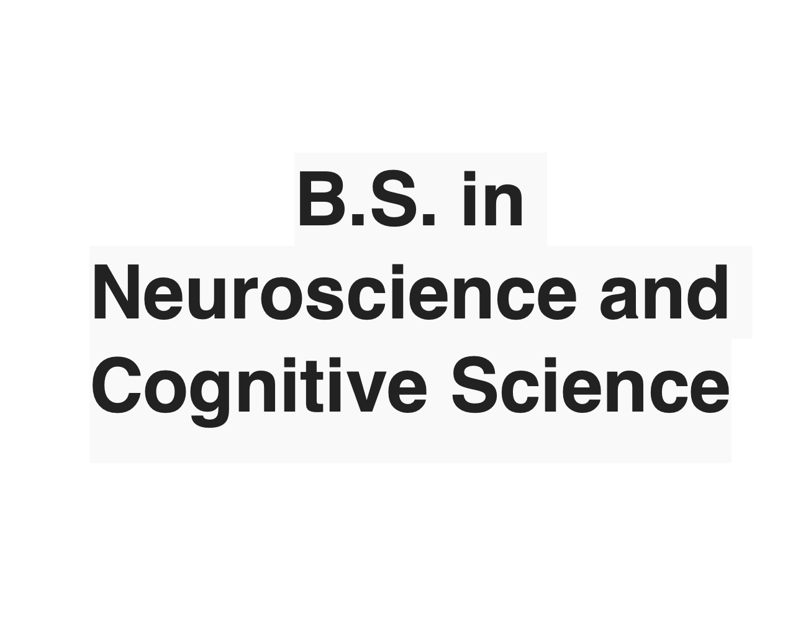
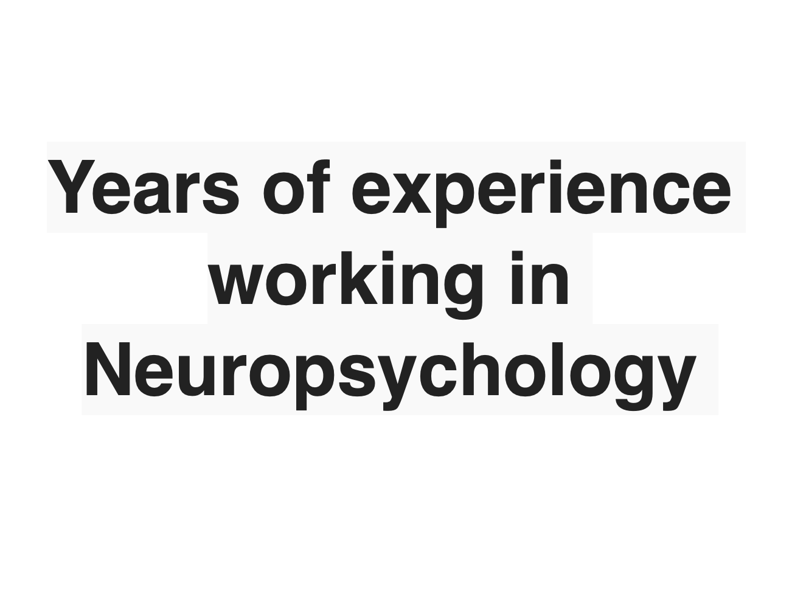
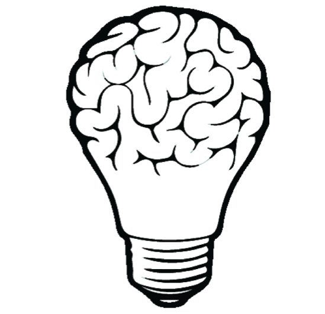
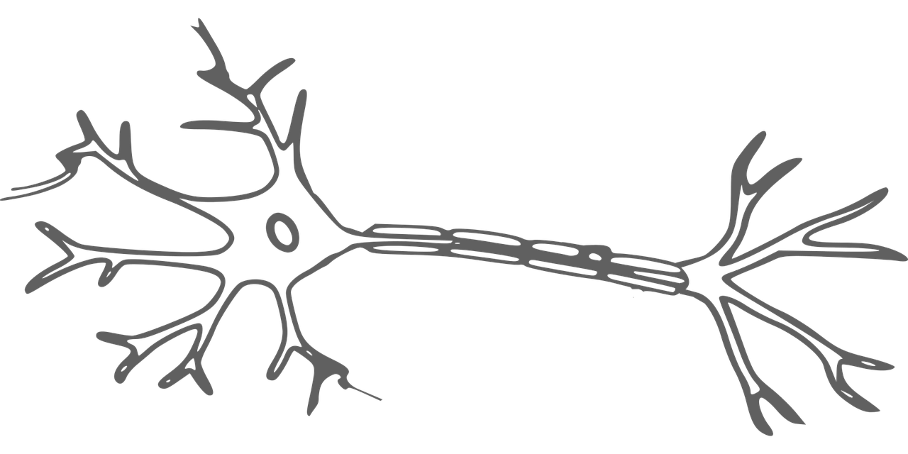

Brain Systems Tested
The screeners available on this website test the same core brain systems but for different purposes.
The current systems included in testing are: Executive Funtion, Attention, Visual Spaital, Long Term Memory, Short Term Memory, Verbal Comprehension, Working Memory, Processing Speed, Motor Speed, and Pattern Recognition.
Philosophy
The goal of this website is to provide Neuropsychological testing to the public for free. By exploring our own cognition, we gain a better understanding of ourselves.
The screeners on this website are not to be used for diagnostic purposes.
Created by Kristena Kay
My credentials:

Obtained from the
Class of 2019
Obtained from the
University of Arizona
Class of 2019

Dedicated
Since 2019
Dedicated
Psychometrist
Since 2019
Research in Lewy
Body Dementia
Since 2020
Completed Screeners
Hours of Work
Positive Reviews
Cups of Coffee
Cognitive Tests
What clients have to say
- 
- 